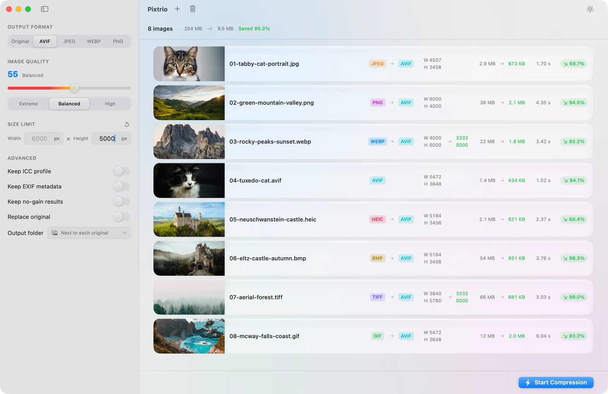

Native, not a wrapper
Built with SwiftUI as a universal binary, so it runs natively on Apple silicon and Intel Macs alike. macOS 14 or later, eleven interface languages, and light and dark following the system.
A native batch image compressor for the Mac.
Drop in images, or a whole folder. Choose an output format and quality, press one button, and the batch gets smaller next to the originals.
Everything runs on your Mac.

Built with SwiftUI as a universal binary, so it runs natively on Apple silicon and Intel Macs alike. macOS 14 or later, eleven interface languages, and light and dark following the system.
Pixtrio requests no network entitlement at all. Nothing is uploaded, no account is needed, and there is no telemetry. Your images are read, compressed and written back only where you point it.
Pay once and you're done. No in-app purchases, no subscription, no ads.
Drop in images or an entire folder, and subfolders are scanned for you. One row per image puts format, dimensions, size and time on the same line, and only the columns that actually changed get an arrow.
Most tools either ship your images to a server, or spread the settings across three dialogs. Pixtrio does two things: it takes a whole batch in one go, and it lets you see what changed at a glance.